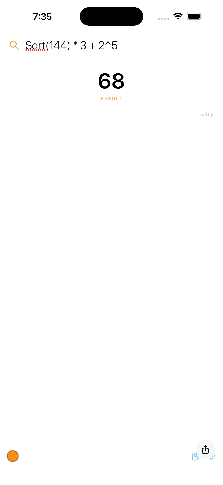

Instant answers — math, facts, definitions. On the web, Mac, and iPhone.
Canada is a country in North America. Its ten provinces and three territories extend from the Atlantic Ocean to the Pacific Ocean and northward into the Arctic Ocean, covering 9.98 million square kilometres. Population: approximately 40.1 million.
The same answer engine, same eight themes — math still runs offline.

Arithmetic and expressions evaluated locally. No network needed.
An AI answer layer first, then DuckDuckGo Instant Answers and Wikipedia. No API keys required.
The same answer engine on every surface. Start on one, finish on another.
Orange, red, yellow, green, blue, purple, pink, high contrast.
SwiftUI and MenuBarExtra. No Electron. Light and fast.
MIT licensed. No telemetry. Your queries stay on your machine.
"The menubar client is every bit as intuitive as the web interface, meaning, it's easy to use and even if you aren't quite sure what you're asking, there's a good chance [it] will figure it out."
The Next Web"Nimble can handle pretty much anything you'd normally throw at [it], including simple questions and math problems that require graphs."
LifehackerNimble is MIT licensed. A ground-up rewrite of the original Maybulb/Nimble in native SwiftUI. No API keys, no accounts, no subscriptions.
View on GitHub